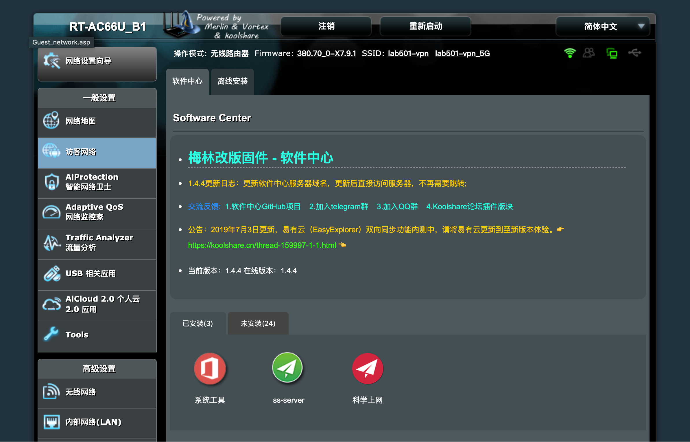

华硕AC66U-B1路由器配置ssr
准备工作
- 一台华硕AC66U-B1路由器（滑稽
- 老版本路由器官方固件 FW_RT_AC66U__B1_300438420308.trx
- merlin ac68u x7.9.1的固件
- ssr的插件sb.tar.gz
下载地址：链接:https://pan.baidu.com/s/1iV_Z9dWuyRV1nOt834G5gw 密码:6x09
步骤
- 首先正常进入设置界面，进入系统管理-系统设置，选择Format JFFS partition at next boot和Enable JFFS custom scripts and configs。
- 在系统管理-固件升级处上传老版本官方固件，之所以不一开始就刷merlin是因为官方在后面新的版本里增加了校验，对于非官方固件不允许升级。
- 重启进入设置界面，上传merlin固件进行固件升级。
- 将sb.tar.gz文件重命名为shadowsocks_4.1.3.tar.gz，因为shadowsocks的名字会被百度网盘屏蔽。
- 在Koolshare软件中心页面等一会，会出现当前软件中心版本和在线版本，等一会后出现更新按钮，点击更新。
- 在Koolshare软件中心页面点击离线安装，选择刚刚重命名的shadowsocks_4.1.3.tar.gz。
- 等待安装完后就能在已安装处看到科学上网这个插件了，之后就是常规的ssr配置了。
如果出现离线安装无法上传、无法安装，大概就是固件不对，最好选择新版本的固件，需要去koolshare下载。

- 本文链接：https://ssdemajia.github.io/2019/07/19/%E5%8D%8E%E7%A1%95AC66U-B1%E9%85%8D%E7%BD%AEssr/
- 版权声明：本站所有文章除特别声明外，均采用 CC BY-NC-SA 3.0 CN 许可协议。转载请注明出处！